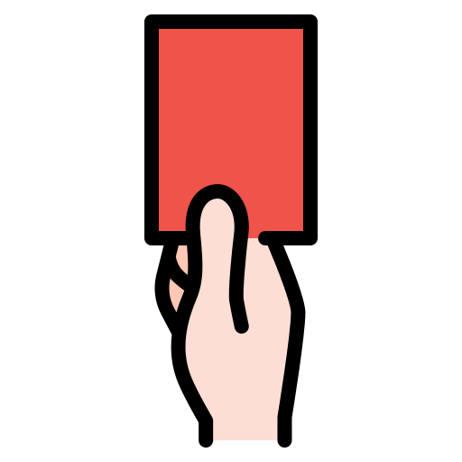

Funcionamento do futebol de campo
Primeira Regra
como funciona a distribuição de jogadores em campo?
Goleiro:
O goleiro evita gols, posiciona-se bem, distribui a bola e comunica-se com a defesa. Sua leitura de jogo e calma são essenciais para a equipe.
Zagueiro:
O zagueiro bloqueia ataques, desarma adversários e intercepta passes, colaborando com o goleiro e outros defensores para manter uma defesa sólida.
Lateral:
O lateral defende e ataca pelas laterais, marcando adversários, cruzando e apoiando o time, com boa movimentação e leitura de jogo.
Volante:
O volante atua no meio-campo, desarma adversários, protege a defesa, distribui passes e apoia o ataque, sendo crucial para controlar o ritmo do jogo e conectar os setores do time.
Meia:
O meia cria e distribui jogadas no meio-campo, conectando defesa e ataque, fazendo passes precisos e buscando oportunidades de gol, sendo essencial para organizar o jogo e gerar chances.
Atacante:
é responsável por converter oportunidades em gols, criar chances para si e para os companheiros, e pressionar os defensores adversários, desempenhando um papel essencial na ofensiva do time.
Segunda Regra
Como funciona o sistema de cartões?
Cartão amarelo:

O cartão amarelo é um aviso para infrações leves e comportamento impróprio. Dois cartões amarelos na mesma partida levam à expulsão com um cartão vermelho.
Cartão vermelho:
O cartão vermelho expulsa imediatamente o jogador por infrações graves e pode resultar em suspensões adicionais.
Terceira regra
Fomo funciona o impedimento?
O impedimento ocorre quando um jogador está mais próximo da linha de gol adversária do que a bola e o penúltimo defensor no momento do passe, e está ativamente participando da jogada. Não é considerado impedimento se o jogador estiver na sua própria metade do campo, na mesma linha ou atrás do penúltimo defensor, ou receber a bola de um tiro de meta, escanteio ou arremesso lateral. A regra evita que jogadores se posicionem injustamente perto do gol adversário.